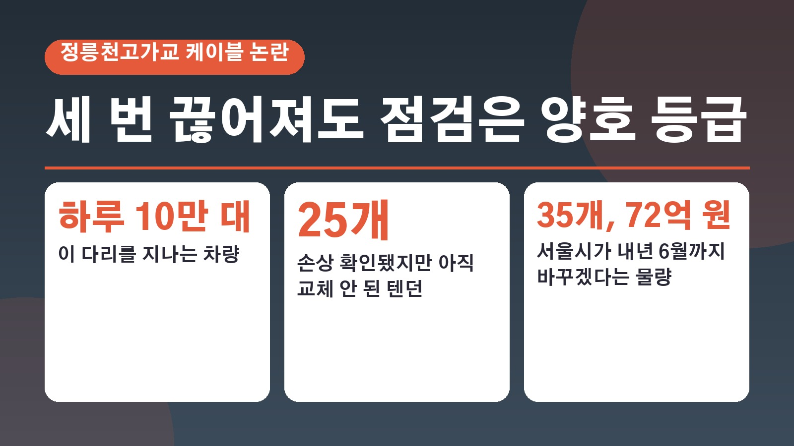
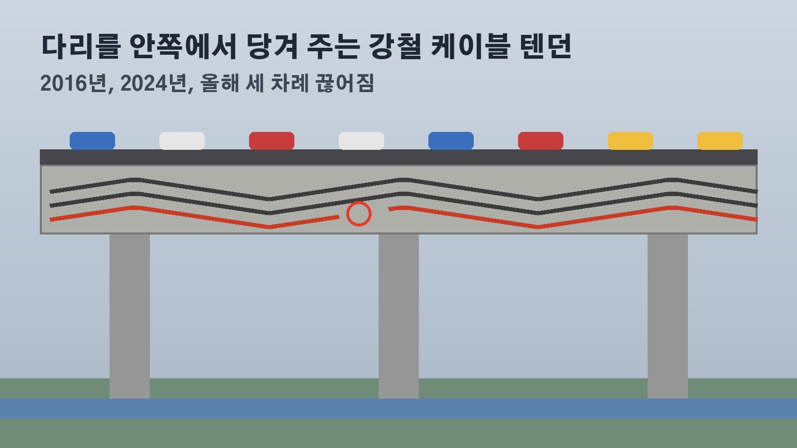

하루 10만 대 지나는 정릉천고가교, 강철 케이블이 세 번 끊어지는 동안 점검은 계속 B등급이었던 이유와 35개 교체 계획

정릉천고가교를 지나 출퇴근하시는 분이라면 이번 소식이 꽤 신경 쓰이셨을 거예요. 하루 10만 대가 넘는 차가 오가는 이 다리에서 다리를 떠받치는 강철 케이블이 지금까지 세 번 끊어졌는데, 그사이 안전 점검 결과는 계속 양호 수준이었다는 지적이 국회에서 나왔습니다. 무엇이 끊어졌는지, 점검 등급을 두고 어떤 말이 오가는지, 서울시는 어떻게 설명했는지, 앞으로 무엇을 지켜보면 되는지 정리해 볼게요.
정릉천고가교에서 무슨 일이, 세 번 끊어진 텐던
19일 국회 국토교통위원회 소속 더불어민주당 황희 의원이 서울시와 국토안전관리원 등에서 받은 자료를 분석해 내놓은 내용이에요. 정릉천고가교에서는 2016년, 2024년, 그리고 올해까지 세 차례 텐던이 끊어졌습니다. 텐던은 외부긴장재라고도 부르는데, 콘크리트가 차량 무게를 견딜 수 있도록 안쪽에서 강하게 당겨 주는 강철 케이블이에요. 다리를 지탱하는 핵심 부재라서 끊어지면 큰 사고로 이어질 수 있다는 지적이 나옵니다.
서울시는 2016년 처음 끊어졌을 때 손상된 케이블 32개를 바꾸고, 물이 새는 곳을 막고, 분기마다 점검하는 재발 방지 대책을 세웠어요. 그런데도 2024년 9월에 1개, 올해 또 1개가 끊어진 채 발견되면서 같은 일이 되풀이됐습니다.
점검은 계속 B등급, 끊어진 시점과 겹친 일정
논란의 중심은 점검 결과예요. 서울시는 2023년 5월부터 2024년 3월까지 시설물 상태를 자세히 보는 정밀안전진단을 하고 중대한 결함이 없다며 양호 수준인 B등급을 줬습니다. 그런데 진단이 끝나고 6개월 뒤인 2024년 9월에 텐던 1개가 끊어졌어요.
지난해 2월부터 올해 3월까지 이어진 정밀안전점검에서도 B등급이 나왔지만, 점검이 끝난 뒤 올해 다시 텐던 1개가 끊어졌습니다. 황 의원은 두 번 모두 점검 체계가 위험을 미리 알아채지 못했다고 지적했어요. 끊어진 당시에도 긴급 안전조치나 위험 표지 설치, 주민 알림이 제대로 이뤄지지 않았고, 케이블 한두 개가 끊어져도 구조 안전에는 문제가 없다는 이유로 임시 보강이나 사용 제한도 하지 않았다는 것이 황 의원의 주장입니다.
d등급인가 C3등급인가, 등급 분류를 둘러싼 논란
2024년 파손 뒤 서울시는 2024년 9월부터 지난해 8월까지 텐던 300개를 모두 조사했어요. 그 결과 아직 끊어지지는 않았지만 내부 강철선에 부식과 손상이 많이 확인된 텐던이 25개 나왔습니다. 이 25개는 지금까지 하나도 교체되지 않은 상태예요.

황 의원은 국가 기준인 시설물의 안전 및 유지관리 실시 세부지침 교량편에 따르면 단면이 줄어들 정도로 부식된 케이블은 구조 안전상 중대한 결함, 즉 d등급에 해당한다고 설명했어요. 그런데 서울시가 이를 시 자체 기준인 C3등급으로 따로 분류해 심각한 결함을 중간 수준의 손상처럼 보이게 했다는 의혹을 제기했습니다. 그러면서 텐던 전체를 국가 세부지침에 따라 다시 평가하고, 그 결과와 구체적인 교체 계획을 시민에게 공개하라고 요구했어요. 이 부분은 의원실의 주장이고, 서울시의 설명은 아래와 같습니다.
서울시 설명과 내년 6월까지 35개 교체 계획
서울시는 2023년과 2025년 점검 때는 콘크리트 내부를 조사할 수 없었고, 텐던을 포함한 시설물 전체를 종합적으로 평가해서 B등급을 매긴 것이라고 해명했어요. 등급이 다리 전체에 대한 종합 평가라는 설명입니다.
교체 계획도 내놨어요. 전수조사에서 손상이 확인된 25개에 예전에 끊어진 것이 발견됐던 10개를 더해 모두 35개를 내년 6월까지 바꾸겠다고 밝혔고, 드는 비용은 72억 원이라고 했습니다.
이 다리를 이용한다면 지켜볼 대목
정리하면 지금 확인된 사실은 세 가지예요. 텐던이 세 번 끊어졌다는 것, 손상이 확인된 25개가 아직 교체 전이라는 것, 서울시가 내년 6월까지 35개를 바꾸겠다고 한 것입니다. 반면 C3등급 분류가 결함을 축소한 것인지는 의원실의 의혹 제기이고 서울시는 종합 평가였다고 맞서고 있어서, 아직 결론이 난 이야기는 아니에요.
앞으로는 국가 세부지침에 따른 재평가 요구를 서울시가 받아들일지, 교체 일정이 계획대로 내년 6월 안에 끝나는지, 재평가 결과와 교체 계획이 시민에게 공개되는지를 지켜보시면 좋겠습니다.
참고한 기사: 뉴시스 서울시 점검은 양호, 정릉천고가교 케이블 잇단 파손 2026년 10월 19일, 헤럴드경제 황희, 서울시 정릉천교 중대 결함 감추기 위해 임의 등급 조작 의혹 2026년 10월 19일, 경향신문 황희, 서울시 차량 10만대 오가는 정릉천고가교 손상된 케이블 2년째 방치 2026년 10월 19일, 불교방송 정릉천교 중대 결함 은폐 의혹 제기 2026년 10월 19일
태그
정릉천고가교 정릉천고가 텐던 교량안전 외부긴장재 서울시안전점검 정밀안전진단 교량케이블 황희의원 서울시국정감사